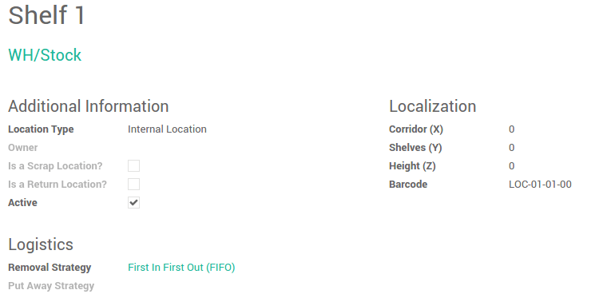

概述
下架策略在拣货过程中很有用，在拣货员对产品拣货的时候优化距离，质检或者到期产品管理等都非常有用。
当产品的移动需要被完成的时候，YuanCloud会在系统内部找到该调拨单上的要求数量的可用数量。YuanCloud会根据设置在 [UNKNOWN NODE problematic]产品种类**或者**产品**上的**下架策略 [UNKNOWN NODE problematic]分配产品到该调拨单。
配置
在**库存**应用中，进入：[UNKNOWN NODE title_reference]:


勾选**追踪批次号还活着序列号**，仓库进行多库位管理**和**产品的高级路线管理，然后点击**应用**。
然后，打开：[UNKNOWN NODE title_reference] 并打开需要设置出库策略的库位。
下架策略
FIFO (先进先出)
[UNKNOWN NODE problematic]先进先出**策略意味着先进来的产品会先出库。如果有销售易变质的产品，就应该使用FIFO的方法。如果公司销售周期性相对短的产品，例如服装，那么也最好使用FIFO，这样不至于在库存中囤积大量的过时产品。
进入：[UNKNOWN NODE title_reference]，打开存货库位并设置**先进先出**的出库策略。
我们举个先进先出策略的例子
在你的仓库库存(仓库/库存)库位中，[UNKNOWN NODE problematic]iPod 32 Gb``的产品有``3``个批次。
可以在存货估值报表中看到可用存货的详细信息

创建一个数量为 25 的``iPod 32 GB``销售订单并确认该订单
在出货单中你可以看到在使用先进先出的出库策略下系统自动带出的``Ipod 32 Gb`` 的批次是** 最旧** 的批次号。
LIFO (后进先出)
在这种仓库管理中，最后买进的产品最先出库。后进先出用在后买进的产品没有足够的空间或者货架存放的状况下。
进入：[UNKNOWN NODE title_reference]，打开库存库位并设置**先进先出**的出库策略。
在我们的示例中，让我们来检查一下``WH/Stock``库位中的`Ipod 32 Gb`` 可用库存。

创建一个数量是``10``的``Ipod 32 Gb``的销售订单
在出库单中你可以看到在使用后进先出的出库策略的状况下``Ipod 32 Gb`` 被分配的批次号是**最新的**批次号。

FEFO (到期先出)
在先到期先处的仓库管理中，系统会根据产品的到期日期的先后顺序分发产品。
进入：[UNKNOWN NODE title_reference]。勾选**在序列号上定义到期日期**。然后点击**应用**保存变更。

这能够让你在序列号上设置**最佳日期**，生命终止日期，移除日期，警示日期。进入：[UNKNOWN NODE problematic]库存控制--> 序列号／批次号 [UNKNOWN NODE problematic].

最佳日期：这个日期是该序列号的产品已经开始变质的日期，但是还没有危险。
[UNKNOWN NODE problematic]生命终止日期:[UNKNOWN NODE problematic]这是该序列号的产品已经产生危害并且不能使用的日期。
[UNKNOWN NODE problematic]移除日期:[UNKNOWN NODE problematic]这是该序列号的产品需要从库存移除的日期。
[UNKNOWN NODE problematic]警示日期:[UNKNOWN NODE problematic]这是该序列号产品应该被警告通知的日期。
带有到期日期(移除日期)的产品将被先移除掉，所以你需要在批次号／序列号上设置移除日期。
要在库位上设置出库策略，进入：[UNKNOWN NODE title_reference] 并选择FEFO。

让我们举个例子，在``WH/Stock`` 库位中有``3``个批次的``冰淇淋``： LOT0001, LOT0002, LOT0003 ，分别标有不同的到期日期。
批次 / 序列号 | 产品 | 到期日期 |
|---|---|---|
| LOT0001 | 冰淇淋 | 2015-08-20 |
| LOT0002 | 冰淇淋 | 2015-08-10 |
| LOT0003 | 冰淇淋 | 2015-08-15 |
我们将创建一个带有``15kg`` 的``冰淇淋``的销售订单并确认。
销售订单相关的发货单将会根据**FEFO**的出库策略进行调拨。
它会根据批次上的移除日期从批次``LOT0002``拿出 10kg`，从``LOT0003 拿出 5kg。